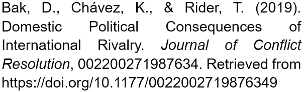
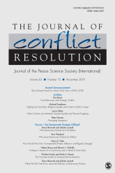

收录于合集
作品简介
【作者】
Daehee Bak 德克萨斯理工大学政治学系副教授和本科项目主任，他的研究兴趣包括国际关系纷争、外国直接投资和人权。 Kerry
Cha´vez 德克萨斯理工大学政治学系博士研究生，研究议题为国际冲突、国内冲突和干预冲突的模式、决定因素、动机和策略。
Toby Rider 德克萨斯理工大学政治学系副教授，研究重点是军备竞赛、竞争进程和领土冲突的起因与结果。
【编译】 徐垚晟（国政学人编译员，加州大学圣迭戈分校）
【校对】 金磊
【排版】 贺奕
【来源】

期刊介绍

Journal of Conflict Resolution，《冲突解决杂志》是一本融合了社会科学理论和人类冲突研究的跨学科杂志。JCR着眼于国家之间和国家内部的冲突，但也探索各种可能有助于理解战争与和平问题的群体间和人际冲突。
国际竞争如何影响国内政治？
Domestic Political Consequences of International Rivalry
内容提要
按照传统观点，人们认为外部威胁会增强内部凝聚力和政府能力。本文通过研究国际战略竞争（这表明即使在没有军事冲突的情况下也存在持续的外部威胁）如何影响国内政治，从而重新评估了内群体和外群体(in- groupand out-group)的机制。一种解释是，外部威胁对国内不同行为者（亲政府派和反政府派）的政治激励的影响是不同的。 作者认为，来自敌对国家的威胁会加剧国内动荡和反对派对政权的挑战，同时由于资源有限和政治包容程度很低，政府会更多地依靠镇压策略。此外，作者认为，国际竞争所产生的国内结果是多种多样的，具体取决于该国政治制度的特点和对威胁感知的程度。 通过实证检验，作者得出了支持其假设的有力证据。
文章导读
一、引言
外部威胁的存在是否会促进国内政治团结和社会稳定？根据社会认同理论中关于群体关系的描述（theory of in-group and out- group,以下简化为IOG理论），答案似乎是肯定的。根据IOG理论，外部威胁会促进内部凝聚力的加强。因此，对于一个寻求国内支持的政治领导人来说，一个紧急的外部威胁的存在并不总是不幸的。另外，根据国家建构理论(State- making theories)，外部安全威胁和备战有利于政府集权并提升政府能力。
尽管IOG理论很有吸引力和解释力，但仍有许多案例是违背这个理论逻辑的。从古至今，许多案例表明，在外部安全威胁下，国内动荡的情况会增加。例如，修昔底德将雅典帝国的灭亡归因于其与斯巴达的对抗性竞争中产生的内部纷争(Thucydides,2.65)；在崩溃前的最后300年中，罗马帝国经历了由外部威胁引发的广泛的内部动荡(Gibbon1841)；在越战期间，由于舆论恶化，美国遭遇了严重的内部分裂。
看到存在这么多的与IOG理论相背离的案例，人们想知道这些案例是偶然的还是存在一个单独的演化模式。那么问题随之而来，什么因素和条件促成了IOG理论的成立，又是什么因素和条件使得IOG理论失效？为什么在外部威胁存在和政治团结显得不可或缺的时期，国内人民会不支持甚至破坏政府？在内部和外部的双重压力下，政府将如何应对？为了解开这些难题，作者构建了一个理论，在新的视角中重新聚焦和调整IOG理论的逻辑。 首先，作者将外部威胁的概念进行了扩充，从间断性的与外部的冲突扩充到了长期的与外部的战略对抗。其次，由于认识到内部民众几乎不可能同一化，作者研究了外部压力如何影响不同类别的民众。第三，在资源紧张和权力斗争耗资巨大的情况下，竞争性威胁可能会耗尽而不是增强国家能力。 压力已经很大的领导人除了面临外部竞争之外还面临内部动荡，他们可能会认为镇压策略是最可行的应对措施。与传统观点相反，作者得出结论：在一定条件下，外部威胁破坏了内部政治统一，并使政权稳定成为问题。
二、 IOG and Rivalry Literatures ****IOG 和竞争文献综述
__
Cohesionand Centralization Hypotheses 内聚力和集权假设
长期以来，IOG理论在心理学、社会学、人类学和政治学等许多学术领域一直被视为常识(Stein1976)。其中，有两点假设十分突出。 凝聚力假设认为，外部国家威胁会增强国内民众的政治凝聚力。集权化假设认为外部威胁会促进政府集权化，从而提升政府能力。
研究IOG理论的一部分文献强调了内部凝聚力的社会心理机制。Q. Wright(1942)认为，在安全威胁下，备战和战争会建立和维持内部团结。此外，学者们提供了经验证据，表明诸如领土威胁之类的显著外部威胁会使民众对异见者的容忍度降低，这表明抵制同一化的群体会面临更高的成本(Hutchisonand Gibler 2007; Gibler and Miller 2014; Miller 2017)。并且，通过这个,有些学者也发现了领土威胁会促进政府集权化的证据(Gibler, 2010; Miller andGibler, 2011; Gibler and Miller, 2014)。赖特(1942)、西梅尔(1955)和斯坦(1981)认为，外部冲突促进了集权化政府的形成和扩张。
凝聚力假设和中央集权化假设都引起了学术界的广泛关注，但是学界对这一过程仍然知之甚少。换句话说，尽管有理论和证据支持IOG理论这两个假设，但也存在着与这一模式背道而驰的案例。本文利用了这些偏差和矛盾来分析这两个假设何时、为什么以及如何发生。
ConceptualIssues of External Threat 外部威胁的定义
作者首先对外部威胁进行了重新的定义。第一，外部威胁的特征、相关性和根源各不相同。存在这样一种外部威胁，显示出低烈度暴力和低紧迫性，但是仍能让内部产生对抗外部的状态。作者把这样一种外部威胁称为战略性竞争。事实上，来自战略对手的威胁比许多其他国家面临的国际性问题更容易被识别为外部威胁。第二，不应将外部威胁与间断发生的冲突或战争混为一谈。作者认为潜在的暴力和未来可能恶化的争议性的国际关系同样是国内政治反应的不可忽略的刺激因素。因此，作者就采用了“战略竞争”来代表外部威胁。 战略竞争的定义为一种竞争性和潜在冲突的国家间关系，在这种关系中，各国将彼此视为构成明显威胁的敌人 ( M.P. Colaresi, Rasler and Thompson, 2008) 。
三、 Domestic Out-groups ‘and In-groups’ ****Strategic Incentives 内部反政府派与亲政府派的战略激励
作者所构建的理论基于四个简单的前提：1）一个国家的政治光谱由亲政府派和反政府派组成；2）亲政府派和反政府派都寻求最大化自己的政治权力和经济利益；3）在国家资源分配上，亲政府派和反政府派是有不同的偏好的；4）一个国家的资源和提取能力是有限的。其次，作者提出了 五个假设 。 假设一：来自外部的战略性竞争会加剧内部冲突。 作者认为，当面临紧急的外部威胁时，短期的应急性的集权和内聚力是可以为反政府派接受的。但是，如果是长期地面临外部的战略性竞争时，政府对国内的资源重新分配的行为（扩大军事开支和备战）会使得反政府派被边缘化，他们的利益会受到损害。在这样的情况下，政府巩固权力的行为会被反政府派视为一种威胁（垄断政治和经济权力的策略）。例如，在2016年面临朝鲜的核威胁时，韩国前总统朴槿惠呼吁国民要保持“内部团结和具备面对强大对手的战争心态”。而反对党认为朴槿惠夸大了来自朝鲜的威胁，试图通过增加民众的不安全感来帮助本党赢得大选。因此，与现有的IOG理论预期相反，战略竞争式的外部威胁会加剧国内亲政府派和反政府派之间的权力竞争，从而引起内部动荡。 假设二：当一个国家在经历经济危机时，战略竞争式的外部威胁会加剧内部冲突。 作者认为，政府经济调控的失败以及要求个人在政治和经济层面的不合时宜的牺牲，将进一步刺激内部的反政府派，使其产生反政府行为和发表反政府言论。 假设三：当国内对外部威胁的感知强烈时，外部竞争式威胁加剧内部冲突的可能性是很小的。 假设四：当先前的国内政治团结水平低时，外部竞争式威胁加剧内部冲突的可能性是很大的。 作者认为，当国内对外部威胁的感知强烈时，反政府派即使试图开展行动，也不太可能获得广泛的支持，实际上还可能面临谴责。另一方面，当先前内部政治团结的水平较低时，例如在高度分散或两极分化的政治体系中，反政府派反对政府集权的可能性更大。 假设五：外部竞争性威胁的存在会促使政府运用镇压策略。 作者认为，政府的策略受制于两个交叉因素。第一，为了应对外部威胁，内部资源相对于和平时期会变得紧张，这削弱了政府收买反政府派的能力。第二，收买反政府派的行为并不一定会保证他们遵守承诺，他们可能会勾结外部威胁力量推翻现政府。因此，在内部和外部双重威胁下，政府更愿意选择镇压策略。
四、研究设计
作者选择“年”为基本时间单位。用于测试“国内冲突”假设的模型所用的数据跨度为1952年至2009年，涵盖143个国家。用于测试“镇压”假设的数据涵盖了1982年至2005年，包括111个国家。
在因变量方面，作者主要使用的是内部冲突的加权指数，该数据来自跨国时间序列数据档案库(Banksand Wilson 2013)。在自变量方面，针对所有假设，主要的自变量是一个二元赋值(binarymeasure)，用于记录一个国家在特定年份内是否存在战略性竞争，这是根据Thompson(2001), M. P.Colaresi, Rasler和Thompson(2008)的“战略竞争”数据得出的。在调节变量(ModeratingVariables)方面，假设二中的经济危机指标是一个二分变量，用于记录一个国家是否至少经历了以下经济冲击中的一项：货币危机，内部/外部主权债务危机，银行危机，股票市场崩溃或通货膨胀危机；假设三中的变量使用了PRIO- UPPSALA武装冲突数据来评估一个国家在过去的两年中是否经历过内部战争。假设四中的调节变量则显示一个国家内部政治的分裂程度。另外，作者还设定了诸多控制变量。
五、实验结果
Table 1给出了假设一的实证结果。在模型（1）和（2）中，一元和多元回归表明战略竞争对内部冲突的程度产生了显著影响。同样，在使用负二项模型方法的模型（6）中，战略竞争会显著增加内部动乱的次数。这些实验结果支持了理论假设，即来自外部竞争的威胁不会促进国内凝聚力，反而会增加国内冲突。
Table 2中的模型（1）和Figure 1中的第一张图表明，当一个国家经历经济危机时，外部威胁所引起的内部动荡的可能性更大。Table 2中的模型（2）和Figure 1中的第二张图表明，在近期没有战事的情况下，战略性竞争所带来的影响（内部动荡）依然是重大的，只有当外部威胁可能危及整个国家时，才能实现内部凝聚。关于假设四，作者发现，在政治两极化的体系中，外部威胁加剧国内动荡的证据不充分。
关于“镇压”假设，Table 3中的三个模型表明，战略竞争对人权保护水平具有负面且显著的影响。作者发现，民主国家、发达国家以及司法制度健全的国家的镇压程度较低。
六、 结 论
本文使用战略性竞争式的外部威胁概念来检验传统IOG理论的有效性。作者预设了外部威胁会对内部不同的政治派别产生不同的战略激励，并且引入了“gun-and- butter”的权衡考量。作者发现，一些外部威胁的存在会加剧内部冲突而不是增进内聚力。此外，在外部威胁存在的情况下，政府有更高的可能性使用镇压策略。因此，IOG理论（外部威胁的存在会增进内部稳定性）并不总是有效的。
_ ** _ ** _ ** _ 本文由国政学人独家编译推荐**__
扫下方二维码查看往期精彩
【新刊速递】第01期 | Review of International Studies Vol.45, No.4, 2019
【新刊速递】第02期 | International Relations Vol.33, No.3, 2019
【新刊速递】第03期 | International Organization Vol.73, No.3, 2019

分类导览1


分类导览2

点“在看”给我一朵小黄花